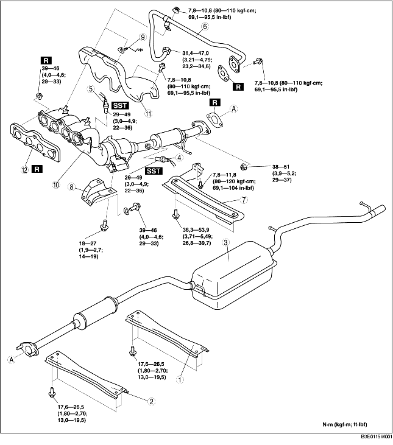

1. Quitar la tapa de la batería. [Véase REMOCION/INSTALACION BATERIA (ZJ, Z6)].
2. Desconectar el cable negativo de la batería.
3. Quitar la tapa inferior.
4. Quitar según el orden indicado en la tabla.
5. Instalar en el orden contrario al de la remoción.

.
|
1
|
Elemento del tunel trasero
|
|
2
|
Elemento del tunel delantero
|
|
3
|
Silenciador principal
|
|
4
|
Sonda lambda calentada trasera
|
|
5
|
Sonda lambda calentada delantera
|
|
6
|
Tubo EGR (lado colector de escape)
(Véase Detalles de instalación tubo EGR).
|
|
7
|
Elemento
|
|
8
|
Soporte del colector de escape
|
|
9
|
Grapa
|
|
10
|
WU-TWC
|
|
11
|
Aislador colector de escape
|
|
12
|
Junta colector de escape
|
1. Quitar llantas y neumáticos delanteros.
2. Efectuar el procedimiento siguiente para un acceso más fácil.
Especificaciones para Europa (volante a la izquierda)3. Quitar el tubo EGR (lado colector de admisión) [Véase REMOCION/INSTALACION SISTEMA DE ADMISION (ZJ, Z6)].
4. Quitar la válvula EGR. [Véase REMOCION/INSTALACION VALVULA EGR (ZJ, Z6)].
5. Desconectar el eje de la dirección del lado caja y articulaciones de la dirección. (Véase REMOCION/INSTALACION CAJA Y ARTICULACIONES DE LA DIRECCION).
6. Desconectar el tubo flexible de la presión y el tubo flexible de retorno. (Véase REMOCION/INSTALACION CAJA Y ARTICULACIONES DE LA DIRECCION).
7. Quitar el caucho del dispositivo de fijación motor N.1. [Véase REMOCION/INSTALACION MOTOR (ZJ, Z6)].
8. Aflojar los pernos del aislador del colector de escape.
9. Desplazar el aislador del colector de escape de manera que no estorbe y aflojar las tuercas del colector de escape.
10. Quitar los pernos de fijación del estabilizador delantero y del travesaño delantero. (Véase REMOCION/INSTALACION TRAVESANO DELANTERO).
11. Aflojar los pernos de fijación del travesaño delantero y bajar el travesaño delantero de 100 mm (3,94 in) aproximadamente. (Véase REMOCION/INSTALACION TRAVESANO DELANTERO).
12. Sostener el tubo flexible con un soporte o una barrita como se muestra en la figura.
13. Quitar el colector de escape con el aislador, bajándolos desde la parte inferior del vehículo.
1. Apretar las tuercas de instalación del colector de escape según el orden indicado en la figura.
1. Apretar los pernos fileteados y las tuercas del tubo EGR según el orden indicado en la figura.